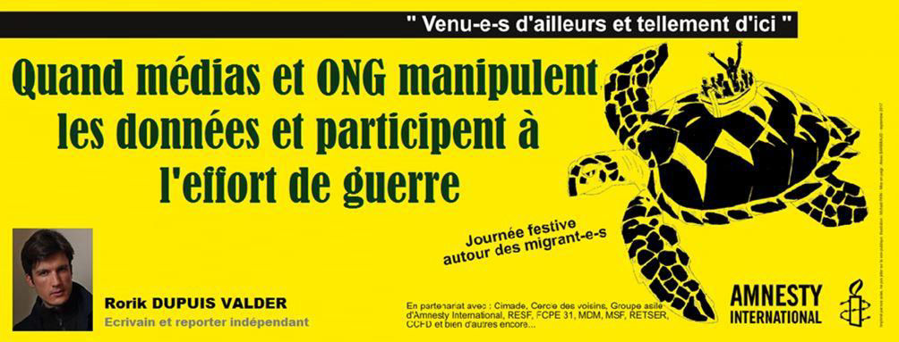
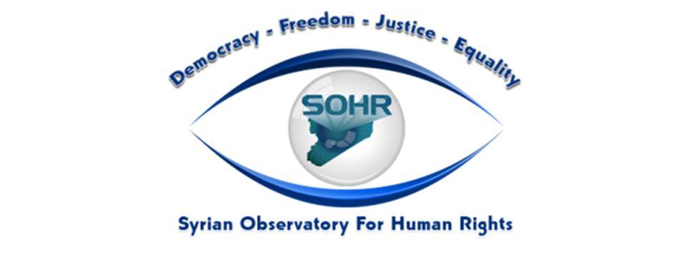
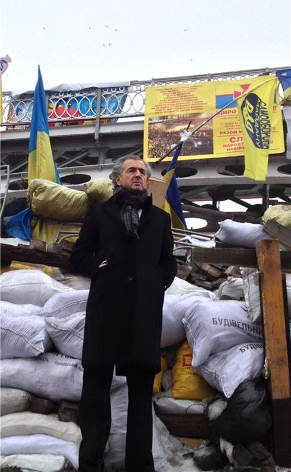
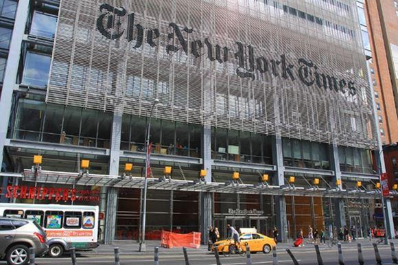

Quand médias et ONG manipulent les données et participent à l’effort de guerre
par Rorik DUPUIS VALDER

Human Rights Watch, Amnesty International, mais quels sont donc ces puissants organes tentaculaires de police démocrate internationale, prédicateurs autoproclamés des droits de l'homme à travers le monde, qui n'hésitent jamais à se servir du sang du scandale et de combines partisanes souterraines pour faire valoir leur lutte — en réalité bien plus communautariste qu'universaliste — de défense des opprimés en terre de résistance à l'empire atlanto-sioniste, alimentant volontiers, par l'arrogance faussement paternelle de la démarche et jusque dans la confusion martiale, de dangereuses tensions diplomatiques, sociales et raciales entre les nations et au sein même des peuples ?
Pour rappel, ce que l'on présente aujourd'hui comme l'organisation non gouvernementale de défense des droits humains « Human Rights Watch », figure de proue mondiale de l'ingérence éthique et libérale, dont les positions se trouvent systématiquement relayées et validées par la presse officielle internationale à l'occasion d'éventuelles « violations » desdits droits par un gouvernement ou une autorité quelconque, n'est autre que la fusion publicitaire, en 1988, des différents comités régionaux Asia Watch, Africa Watch et Middle East Watch créés à la fin des années 1980, et du discret Helsinki Watch, officine américaine de délation européenne dédiée à la surveillance de la bonne application par l'ex-URSS des Accords d'Helsinki de 1975 (censés entériner la nature des relations entre Est et Ouest au cœur de la Guerre Froide).
Cette dernière, fondée en 1978 par les deux activistes Robert Louis Bernstein, diplômé de Harvard, et Aryeh Neier (notamment président de 1993 à 2012 de l'Open Society du milliardaire Georges Soros), alors financée par la Fondation Ford, naît sous l'impulsion, quelque temps auparavant, du dissident soviétique Youri Orlov (l'un des instigateurs, en 1973, du groupe Amnesty International en URSS) et du refuznik Natan Sharansky, lequel sera condamné en 1977 à treize ans de travaux forcés pour ses liens avérés avec les services secrets américains, avant d'émigrer en Israël et d'y faire carrière, à des postes divers, comme homme d'État de grande influence dans la nébuleuse sioniste.
Human Rights Watch se distinguera tout particulièrement par sa pédagogie et sa bienfaisance universalistes (...) à l'occasion de la guerre de Bosnie-Herzégovine au début des années 1990 en s'engageant, aux côtés d'Amnesty International (fondée en 1961 à l'initiative de l'avocat britannique Peter James Henry Solomon), en faveur d'une intervention militaire pour y assurer le « bon acheminement de l'aide humanitaire » ; son directeur Kenneth Roth légitimant alors en ces termes l'opération au nom de l'organisation : « Face à l'impératif que constituent la répression et la prévention des génocides ou de tout autre massacre systématique de populations, le recours à la force armée est parfois justifié »...
Des organisations non gouvernementales, simples « associations à but non lucratif », qui entendent imposer le respect des droits humains aux quatre coins du monde par les armes plutôt que par les mots, trahissant toute espèce de confiance en la collectivité civile et d'espoir en l'effort diplomatique, ne conviendrait-il pas de voir là, à bien y réfléchir, quelque syndrome du « pompier pyromane » ? Pire encore, une entreprise d'opérations souterraines sous fausse bannière ? Comment évaluer, en temps de guerre, de massacres et de chaos social, la chronologie réelle des faits et la responsabilité directe des uns et des autres quant aux pertes humaines à déplorer ? Qui s'avère, tout compte fait, le plus génocidaire des belligérants ?
L'on s'apercevra que, depuis l'épisode des conflits ethniques de Bosnie-Herzégovine, les organisations telles Human Rights Watch, Amnesty International ou encore Care International (qui estimera elle aussi, dans le contexte de la dernière guerre d'Afghanistan, que « la force militaire peut jouer un rôle décisif dans la facilitation de l'aide humanitaire », arguant le principe fumeux et trop équivoque de Responsability to Protect), ne feront qu'appuyer toujours plus l'argument de réponse armée à d'éventuelles violations des droits de l'homme, enjoignant presque aux Nations Unies de revoir leur copie quant à la légitimation d'interventions militaires « à des fins humanitaires » ; ce qui, éthiquement, constitue déjà en soi un contre-sens fondamental, traduisant là une intention antinomique des plus douteuses : aider par la violence ? À quel prix ? Dans l'intérêt de qui ?
L'on peut s'interroger en effet sur l'influence — meurtrière — prise auprès des États soumis ou complices par ces ONG prétendument « philanthropiques » qui, telles des délatrices colonialistes internationales et fautrices de guerre médiatiques (le féminin a ici toute son importance dans sa faculté de dissimulation ; la nouvelle de milliers de morts étant toujours plus supportable à entendre de la bouche d'une speakerine aux yeux doux...), se font systématiquement le relais, sous le prétexte imparable et trop arrangeant de « défense des droits de l'homme », de situations, d'exactions, ou — plus insidieux encore —, d'« estimations » que personne n'est en mesure de contredire puisque les chiffres et les informations annoncés, images-loupes éloquentes à l'appui, devraient se suffire à eux-mêmes, incitant massivement et unanimement (sans contestation autorisée sous peine de « déni » de crimes...), à la compassion populaire et la révolte des âmes manipulées envers un ennemi fabriqué de toutes pièces... Ou comment faire accepter aux gens le sang versé pour les intérêts d'une élite décisionnaire...
Ce ne sont pas tant les chiffres et les mots, aussi fallacieux soient-ils, qui suffisent à déclencher les guerres, mais plutôt la soumission et l'impossibilité de validation ou de critique des informations communiquées dont est victime la population. Cette supercherie journalistique apparaît ainsi comme le leitmotiv de la diplomatie états-unienne des trois dernières décennies, Clinton, Bush et Obama en tête, avant que ne s'ouvre l'étrange et surprenante période Trump — celui-ci ayant au moins le mérite d'exprimer clairement les choses. La « démocratie », pouvoir du peuple, pourrait-elle donc être apportée à ce même peuple jusque sous la menace des canons ? Il semblerait bien que nous ayons été, depuis les origines de la démocratie athénienne voilà 2500 ans, les victimes d'un vaste et lent glissement sémantique...
Si, en application des textes de droit international humanitaire, le « génocide » d'une population ou le principe de « légitime défense » — que seul le plus puissant est en mesure de qualifier — devait justifier des opérations armées en terre étrangère, au nom du respect des « droits de l'homme », comment se convaincre de la réalité d'une situation d'avant-guerre, de son nombre annoncé de victimes, de la nécessité comme de la légitimité d'une intervention militaire extérieure — dont on sait qu'elle amènera toujours plus de morts, civils et soldats —, à des milliers de kilomètres, sinon en devant se fier à un discours officiel d'État, étayé par des médias unanimes et la complicité pressante et belliciste d'organisations prétendument indépendantes œuvrant en faveur de la défense de l'humain ? Mais de quel humain parle-t-on au juste ?
La question du chiffre, de sa véracité et de son officialisation, apparaît ainsi comme déterminante dans l'évolution du scénario de guerre ; celui-ci permettant insidieusement toute légitimation, auprès de ce qu'il est convenu d'appeler « l'opinion publique », d'opérations militaires partisanes qui n'auraient été autrement justifiables que par l'altération médiatique et délibérée de ces informations. En clair, il est évident que gonfler artificiellement un nombre de victimes choisies à annoncer cérémonieusement à quelques millions de téléspectateurs en mal d'exotisme morbide, attiser par les mots journalistiques d'éventuelles tensions locales que l'art diplomatique résoudrait de façon pratique sans grande difficulté, et dupliquer ici et là le mensonge politique en l'imposant unanimement dans les esprits disponibles en incapacité matérielle de contestation, reviennent à permettre et faire admettre par la force des choses le massacre répété de populations civiles, trahir l'engagement de milliers de soldats et violer toute espèce d'éthique militaire en faveur des intérêts profonds et communautaires d'un système politico-médiatique qui y trouve là à la fois le spectacle populaire de sa prétendue domination et l'occasion d'exécuter les manœuvres souterraines les plus viles d'un impérialisme fondamentalement criminel, face à un ennemi connu dont les positions idéologiques ou stratégiques, aussi saines puissent-elles être, auront été savamment et définitivement décrédibilisées par les exercices constants et protéiformes de diabolisation culturelle du média de masse. Tout l'art de la propagande au service du pilleur organisé : brouiller les pistes et faire distraction le temps de la manœuvre.
Prenons l'exemple, dernièrement, du conflit syrien. Quelques études, plus ou moins honnêtes, en ont été faites ici et là : à y regarder de plus près, la quasi-totalité, voire l'exclusivité des chiffres et « estimations » communiqués par les plus importantes agences de presse occidentales (Associated Press, Reuters, Agence France Presse...), qui se font nonchalamment l'écho des informations diffusées par le réseau Al-Jazeera (celui-ci affichant explicitement, par des spots publicitaires réguliers, sa position anti-Assad), provient unanimement d'un seul et même organisme autorisé — malgré la diversité existante de sources locales — pour le moins douteux, l'OSDH,
Observatoire Syrien des Droits de l'Homme, « groupe de veille » basé au Royaume-Uni et financé en partie par la fondation américaine National Endowment for Democracy, sous la responsabilité d'un certain Rami Abdel Rahmane, de son véritable nom Oussama Ali Souleiman, activiste exilé pro-démocrate engagé un temps auprès de l'organisation Amnesty International, avec laquelle il semble maintenir un contact régulier, et que certains chercheurs présentent comme l'idiot utile des services de renseignement britanniques. Une grande famille, semblerait-il...
L'on comprendra que dans cette configuration totalitaire de monopole informatif et réticulaire illimité, la falsification des données de guerre pour les rendre massivement publiques n'est qu'un jeu d'enfant : le nombre annoncé de pertes humaines, de manifestants rebelles ou de détenus anonymes, aussi fantaisiste ou militant soit-il, sera à la fois validé en haut lieu par les services officiels volontairement paresseux de l'ONU et repris en chœur par les médias du monde entier sans aucune espèce de pluralité réellement démocratique des points de vue. Voyez comme il est aisé d'user politiquement de prétextes fallacieux pour couvrir toutes sortes de massacres et autres opérations impérialistes criminelles, financières et stratégiques sur les terres non-alignées...
Un autre cas d'école récent, plus carnavalesque, est celui, en 2011, de la traque atlantiste sanguinolente du trop actif et souverain Mouammar Kadhafi. Quand le fauteur de guerre multirécidiviste, pardon, le « philosophe » milliardaire français au sigle trilitère bien connu, s'engage et parade bruyamment, de cette arrogance mégalomaniaque et surréaliste, en une mise en scène conquérante des plus pathétiques et ô combien insultante vis-à-vis de tous les peuples du monde occupé, pour la destruction de cette grande nation, prospère et indépendante, qu'est alors la Libye, devançant même toute annonce présidentielle ou militaire, l'on ne peut qu'être impressionné de la patience du téléspectateur devant l'ignoble supercherie médiatique et meurtrière dont il est à nouveau la victime. Alors peut-être conviendrait-il maintenant, après analyse raisonnée, après décompte des morts et examen de la situation socio-économique libyenne actuelle, de reconsidérer pertinemment le qualificatif professionnel de notre vedette nationale de la pensée, car si la philosophie est à l'origine des tirs de blindés, pourquoi ne pas offrir une tribune télévisuelle régulière au pédocriminel notoire en le présentant à la nation comme éminent « pédopsychologue » ?
Il faut le voir, ce va-t-en-guerre mondain et compulsif de plateau télévisé, ce haut gradé du ridicule et du racolage communautaire, posant, l'index levé et sottement injonctif, devant les objectifs photographiques les plus flatteurs, aux côtés de quelques ploucs alcooliques de l'armée ukrainienne sur les terres meurtries du Donbass... Le pas semble un peu moins vif, le regard moins convaincant qu'il y a 28 ans à Sarajevo, mais le complet Charvet impressionne toujours autant par son éclat au milieu du chaos scénique et de la misère humaine. Ah combien sommes-nous, devant le spectacle pitoyable de cette énième mascarade meurtrière et journalistique du plus inconsistant ou du plus commercial des philosophes autoproclamés, à nous en remettre à l'espoir d'une balle perdue, le temps du shooting photo...
Au sujet de l'Égypte politique contemporaine — qui semble hanter ces vieilles ONG internationales comme les journalistes désœuvrés en mal de barouf oriental et d'injustices à faire enfler —, il est tout aussi désespérant de devoir retrouver ici et là, chez les organes de presse officiels de la bien-pensance et du démocratisme les plus bornés, cette vieille rengaine monotone, aveugle et désespérée, des « atteintes aux droits de l'homme », tendant immanquablement à la martyrisation paresseuse de militants déchus d'une sacro-sainte « liberté » individuelle, concept égalitariste culturellement incompatible, de facto, avec le fonctionnement des sociétés tribales et conservatrices du monde arabe.
Avant de s'empresser de pointer du doigt, de façon doctrinaire et émotive, par l'imparable effet-loupe et en usant du trouble facile du sensationnalisme — voire du catastrophisme —, toute forme de répression ou d'intimidation politique (que chacun, dans son absolu libéral et égalitaire, est tenu de condamner éthiquement et solidairement), il convient de savoir prendre un peu de hauteur pour comprendre ce dont on parle contextuellement, en privilégiant une vision globale et réfléchie qui inclurait équitablement toutes les données du problème : sociales, économiques, spirituelles et historiques plutôt que strictement humaines et affectives.
Lorsque, considérant l'actualité d'Égypte, de gros médias anglophones de référence (The Washington Post, BBC News, The Guardian...) ne trouvent pas plus populaire et pertinent comme sujet de fond — au nom d'un certain « progrès social » que toute personne un tant soit peu sensée appellerait ici-bas « dégénérescence » — que le cas d'une communauté transsexuelle persécutée comptant quinze âmes tourmentées, parmi 95 millions qu'elle méprise de son narcissisme pathologique, c'est bien là la volonté tout à fait malsaine de provocation d'une élite culturelle fondamentalement belliqueuse... Où sont les articles sur les réussites économiques, commerciales, agricoles, scientifiques, artistiques ou sportives du pays ? Censurés ? Surprenant, pour d'édifiantes « démocraties » à la pointe de la « liberté d'expression » dont elles se targuent constamment... Triste sort médiatique que celui des pays non-alignés !
Malgré les attaques répétées de cette communauté médiatique mondaine et obsédée (à l'image, par l'exemple, de la mauvaise foi crasse et arrogante, aussi dangereusement bornée qu'insidieusement va-t-en-guerre du New York Times à l'égard des régimes non soumis à son logiciel atlantiste autocentré des plus niais), d'un parasitisme symétriquement égal à celui du demi-voyou abruti à l'origine de l'émeute de quartier, c'est avant tout par la réflexion, l'échange courtois et l'intelligence pratique qu'il nous appartient de résister solidairement à cette mise au pas néolibérale généralisée, sous les artifices de l'internationalisme coloré, destructeur des nations et des identités au profit de ses seuls insignifiants auteurs...
Nous attendons ainsi que se distinguent, parmi les causeries ou piaillements des oiseaux engagés, les voix mélodieuses et légitimes du progrès, de l'égalité et des libertés ; des voix responsables, constructives et imaginatives plutôt que délatrices, gueulardes et partisanes, qui sauront opérer, habilement et en bonne intelligence, avec la majorité populaire comme avec l'administration. Oui, le chantier peut sembler vaste et impressionnant en la matière, mais il est à la portée de toutes les âmes de bonne volonté, car l'ordre, la justice collective et la paix sociale sont, intimement, dans l'intérêt de chacun ici-bas. Les héros et héroïnes de balcon ou de salle de rédaction qui crient inlassablement au loup étant toujours moins motivés par la résolution concrète et durable du danger que par quelque quart d'heure de gloire égotique et illusoire...
En définitive, c'est bien le média qui alimente la guerre, et non l'inverse ; les journalistes étant les premiers complices des « crimes contre l'humanité » qu'ils annoncent au monde. S'ils étaient véritablement engagés comme journalistes, leur seule curiosité les inviterait à s'intéresser de plus près aux composantes et motivations de ce deep state qu'évoquent capricieusement, presque tremblotants et à demi-mot, les chefs d'État eux-mêmes. À moins de vouloir y voir là définitivement, par excès maladif de zèle ou crainte mesquine de l'exclusion sociale, l'éternelle et arrangeante « théorie du complot » à base de mythes raciaux, de délires freudiens ou de fake news, qu'une articulation rigoureuse, méthodique et intelligente des données ne fait, pourtant et malheureusement, que valider.
Quant aux ONG des droits humains qui entendent faire la leçon aux autocrates du monde vulnérable et non-aligné, n'accablons pas leurs serviteurs de terrain, embrigadés ou de bonne volonté, qui agissent consciencieusement pour éponger le sang et les larmes des familles, mais étonnons-nous, au mieux, de leur timidité douteuse, leur engagement de parade ou leur inébranlable silence vis-à-vis des dictatures réelles du Moyen-Orient, celles qui empruntent arrogamment le nom de « démocraties », colonisent impunément les peuples, méprisent au vu et au su de tous les fondements du droit international, incarcèrent les gamins frondeurs venus défendre amoureusement la terre qui les a vu naître, négociant leur tranquillité volée au sniping ou au phosphore blanc ; ces démocraties infanticidaires, du vice et de la terreur testamentaires (la seule maîtrise de la lecture pouvant suffire à s'en convaincre...), que personne ou presque, comme en un climat général de pression mafieuse, n'ose sérieusement nommer.
Puisque nous sommes en guerre, comme l'a martelé le président Macron — qui n'inspirerait finalement qu'une forme de compassion désespérée pour son statut d'otage esthétique de l'État profond... — lors d'une allocution ratée et narcotique, navrante de bureaucratisme et d'accents lobbyistes primaires, il ne faudra plus hésiter à dire, pédagogiquement ou plus sauvagement, contre quoi. Un jour, cette minorité agissante et les gens que l'on croit intouchables du fait de leur seul titre ou patronyme, auront à répondre de leurs actes, et ce seront les soldats des deux camps réunis qui témoigneront, fusil en bandoulière ou dague au poing, sans aucune espèce de masque avilissant ou bâillon protecteur contre le plus contagieux des virus : celui de la vérité. Alors, jusqu'à quand devra-t-on compter sur nos médias d'autorité pour nous en protéger ?
Partager cette page